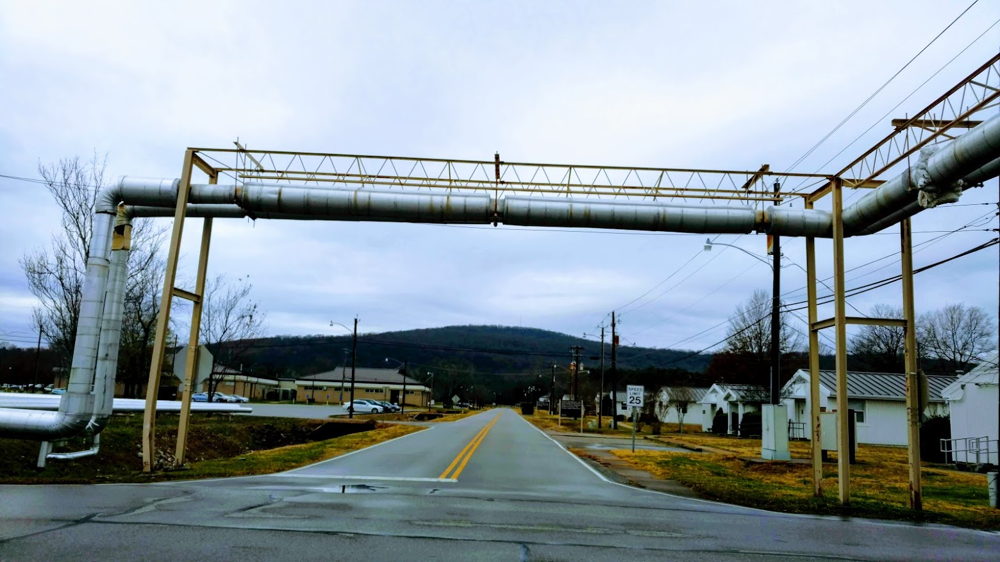

<!DOCTYPE html>
<html>
    <head>
        <title>McBride's Past Vacation Destinations</title>

        <link rel="stylesheet" href="https://unpkg.com/leaflet@1.6.0/dist/leaflet.css"
        integrity="sha512-xwE/Az9zrjBIphAcBb3F6JVqxf46+CDLwfLMHloNu6KEQCAWi6HcDUbeOfBIptF7tcCzusKFjFw2yuvEpDL9wQ=="
        crossorigin=""/>

        <script src="https://unpkg.com/leaflet@1.6.0/dist/leaflet.js"
        integrity="sha512-gZwIG9x3wUXg2hdXF6+rVkLF/0Vi9U8D2Ntg4Ga5I5BZpVkVxlJWbSQtXPSiUTtC0TjtGOmxa1AJPuV0CPthew=="
        crossorigin=""></script>

    </head>

    <body>
        <div id="map" style="height: 1000px"></div>

        <script type="text/javascript">

          var map = L.map('map', {
              center: [38.16, -96.96],
              zoom: 5
          });

          L.tileLayer('http://{s}.tile.openstreetmap.org/{z}/{x}/{y}.png', {
               attribution: '@ <a href="https://www.openstreetmap.org/copyright">OpenStreetMap</a> contributors',
               maxZoom: 15,
               minZoom: 3
            }).addTo(map);
            var planeIcon = L.icon({
            iconUrl: 'plane.gif',
            iconSize:     [50, 50], // size of the icon image in pixels
            iconAnchor:   [19, 19], // the top left corner of the icon will be aligned so that this point is at the marker's geographical location
            popupAnchor:  [0, -10] // point from which the popup should open, relative to the iconAnchor
            });
            var photoIcon = L.icon({
      iconUrl: 'photo.gif',
      iconSize:     [50, 50], // size of the icon image in pixels
      iconAnchor:   [19, 19], // the top left corner of the icon will be aligned so that this point is at the marker's geographical location
      popupAnchor:  [0, -10] // point from which the popup should open, relative to the iconAnchor
  });

var marker1 = L.marker([44.59,-104.72], {icon: photoIcon}).addTo(map);
var marker2 = L.marker([30.35,-89.15], {icon: photoIcon}).addTo(map);
var marker3 = L.marker([48.69,-113.67], {icon: photoIcon}).addTo(map);
var marker4 = L.marker([43.56,-96.72], {icon: photoIcon}).addTo(map);
var marker5 = L.marker([43.71,-98.03], {icon: photoIcon}).addTo(map);
var marker6 = L.marker([43.88,-103.46], {icon: photoIcon}).addTo(map);
var marker7 = L.marker([43.79,-102.10], {icon: photoIcon}).addTo(map);
var marker8 = L.marker([36.11,-115.17], {icon: planeIcon}).addTo(map);
var marker9 = L.marker([44.85,-93.24], {icon: photoIcon}).addTo(map);
var marker10 = L.marker([41.47,-87.27], {icon: photoIcon}).addTo(map);
var marker11 = L.marker([35.81,-83.51], {icon: photoIcon}).addTo(map);
var marker12 = L.marker([41.92,-87.63], {icon: photoIcon}).addTo(map);
var marker13 = L.marker([29.96,-90.06], {icon: photoIcon}).addTo(map);
var marker14 = L.marker([27.99,-81.69], {icon: photoIcon}).addTo(map);
var marker15 = L.marker([42.99,-108.92], {icon: photoIcon}).addTo(map);
var marker16 = L.marker([44.69,-111.25], {icon: photoIcon}).addTo(map);
var marker17 = L.marker([44.64,-110.88], {icon: photoIcon}).addTo(map);
var marker18 = L.marker([34.68,-86.63], {icon: photoIcon}).addTo(map);
var marker19 = L.marker([28.34,-81.57], {icon: photoIcon}).addTo(map);
var marker20 = L.marker([38.78,-107.15], {icon: photoIcon}).addTo(map);

            var pic1 = '';
  var pic2 = '';
var pic3 = '';
var pic4 = '';
var pic5 = '';
var pic6 = '';
var pic7 = '';
var pic8 = '';
var pic9= '';
var pic10 = '';
var pic11 = '';
var pic12 = '';
var pic13 = '';
var pic14 = '';
var pic15 = '';
var pic16 = '';
var pic17 = '';
var pic18 = '';
var pic19 = '';
var pic20 = '';

  marker1.bindPopup('<p style="color:green; font-weight:bold"> Devils Tower, Wyoming </p>' + pic1);
  marker2.bindPopup('<p style="color:green; font-weight:bold"> Darwells Cafe in Long Beach, Mississippi </p>' + pic2);
  marker3.bindPopup('<p style="color:green; font-weight:bold"> Glacier National Park, Montana</p>' + pic3);
  marker4.bindPopup('<p style="color:green; font-weight:bold"> Sioux Falls, South Dakota </p>' + pic4);
  marker5.bindPopup('<p style="color:green; font-weight:bold"> Corn Palace in Mitchell, South Dakota</p>' + pic5);
  marker6.bindPopup('<p style="color:green; font-weight:bold"> Mount Rushmore in South Dakota </p>' + pic6);
  marker7.bindPopup('<p style="color:green; font-weight:bold"> Badlands National Park, South Dakota</p>' + pic7);
  marker8.bindPopup('<p style="color:green; font-weight:bold"> Las Vegas, Nevada</p>' + pic8);
  marker9.bindPopup('<p style="color:green; font-weight:bold">Mall of America in Blooington, Minnesota </p>' + pic9);
  marker10.bindPopup('<p style="color:green; font-weight:bold"> Albenese Candy Store in Merrillville, Indiana</p>' + pic10);
  marker11.bindPopup('<p style="color:green; font-weight:bold"> Cabin in Pigeon Forge, Tennesee</p>' + pic11);
  marker12.bindPopup('<p style="color:green; font-weight:bold">Near Lincoln Park Zoo in Chicago, Illinois </p>' + pic12);
  marker13.bindPopup('<p style="color:green; font-weight:bold"> Gumbo in New Orleans, Louisiana </p>' + pic13);
  marker14.bindPopup('<p style="color:green; font-weight:bold">Legoland in Winter Haven, Florida</p>' + pic14);
  marker15.bindPopup('<p style="color:green; font-weight:bold"> Sacajawea Gravesite in Fort Washakie, Wyoming</p>' + pic15);
  marker16.bindPopup('<p style="color:green; font-weight:bold">Camping in West Yellowstone, Montana</p>' + pic16);
  marker17.bindPopup('<p style="color:green; font-weight:bold"> Hot Springs in Yellow Stone Park, Wyoming</p>' + pic17);
  marker18.bindPopup('<p style="color:green; font-weight:bold"> Redstone Arsonal in Huntsville, Alabama</p>' + pic18);
  marker19.bindPopup('<p style="color:green; font-weight:bold"> Walt Disney World in Kissimmee, Florida</p>' + pic19);
  marker20.bindPopup('<p style="color:green; font-weight:bold"> Gunnison, Colorado</p>' + pic20);

        </script>
   </body>
</html>
